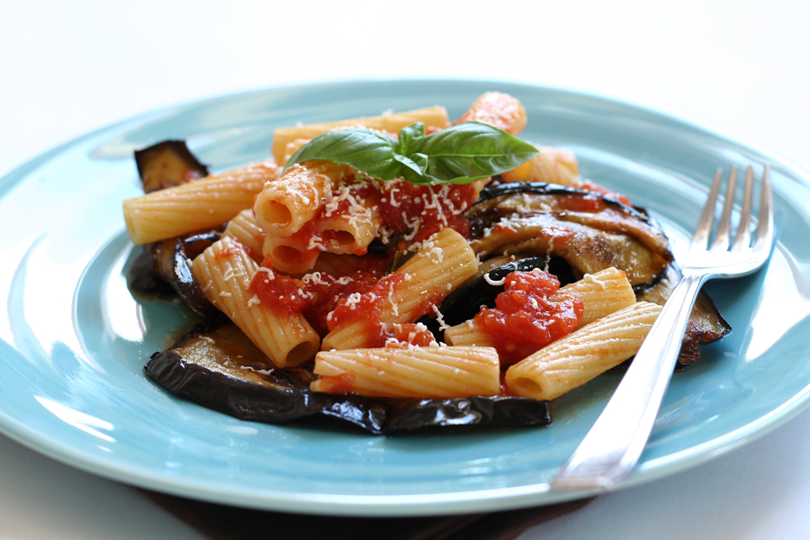

* Pulpo a la parrilla con ajo y romero
Sírvala como entrada y disfrute las texturas del pulpo.
Ideal para los amantes de los sabores a mar.
INGREDIENTES:
1 pulpo entero de 1,5 kilogramos
1 zanahoria cortada en cubos medianos
1 cebolla cortada en cubos medianos
1 tallo de apio cortado en cubos medianos
1 vaso de vino blanco
4 litros de agua
1/2 taza de aceite de oliva
4 dientes de ajo
2 ramas de romero fresco
Sal y pimienta al gusto.
|

click
|
* Pasta alla norma
Una preparación sencilla que lo sacará de cualquier afán; preparada con penne, berenjenas y queso.
INGREDIENTES:
500 gramos de penne
800 gramos de berenjenas cortadas en cuadros
3 dientes de ajo finamente picados
200 gramos de ricota fresco
60 gramos de parmesano
6 cucharadas de aceite de oliva
800 gramos de tomate pelati en lata
Hojas de albahaca fresca
Aceite vegetal para freír
|

click
|
* Pollo al horno con salsa de estragón y mostaza
Una alternativa saludable para aquellos que disfrutan de lo saludable y delicioso.
INGREDIENTES:
1 pollo de 3 y 1/2 libras, despresado
4 cucharadas de aceite de canola
2 puerros cortados en rodajas
1 taza de caldo de pollo
1/4 de taza de vino blanco
2 cucharaditas de estragón picado
2 cucharaditas de perejil picado
2 cucharaditas de mostaza dijon
3/4 de taza de crema de leche
Sal fina marina y pimienta recién molida al gusto
Para los vegetales:
1/2 taza de arvejas cocinadas
1/2 taza de habas cocinadas
1/2 taza de papa criolla cortada en cuadros
1 y 1/2 cucharada de aceite de oliva
Sal y pimienta al gusto
|

click
|
* Brunch Abasto
Comience el día con una receta con mucha fuerza y sabor. Chorizo santarosano, papas y huevos revueltos.
INGREDIENTES:
Una taza de fríjoles negros
Cuatro papas con cáscara cortadas en octavos
Ocho tomates
Cuatro chorizos santarrosanos
Ochos huevos revueltos
Ocho tomates chontos
Cilantro
Sal marina
|

click
|
* Sopa de tortilla
Una receta tradicional de la cocina mexicana para disfrutar en el calor de hogar.
INGREDIENTES:
Dos litros de caldo de pollo
Ocho tortillas de maíz
Ocho tomates parrillados
Un pimentón asado
Un chile chipotle
Pollo desmechado
Cubos de queso fresco
Cubos de aguacate
Crema de leche
|

click
|